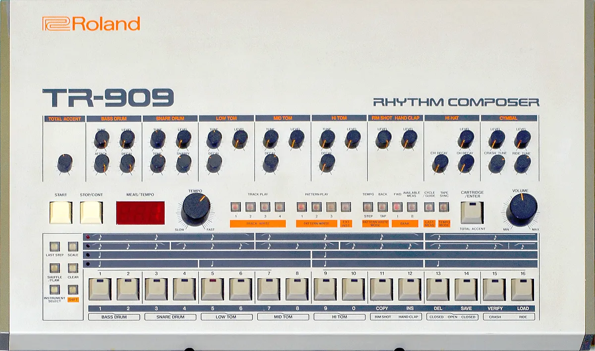

House
House music classics
Ten classic house songs in the order they came out, from Inner City in 1988 to Kings of Tomorrow in 2001, nine with a player.
A listening list, not a history.
This page is a listening list, in the order the records came out. It is not a history of house. The house music guide tells that story, from the Warehouse in Chicago to deep house, garage house and French house, and it already carries the first records: Jesse Saunders, Marshall Jefferson, Mr. Fingers, Frankie Knuckles and Farley "Jackmaster" Funk. Those are not repeated here.
What follows starts where those leave off. Each entry has the year, who made it, one fact worth knowing, and, for all but one, a player.
How these ten were chosen.
Every record here is named by at least one published list: NME's 20 best house songs, Billboard's 50 best house songs of 2025 or 6AM Group's ten classic house songs. I read all three pages myself. A record also had to be house rather than a neighbouring style, and could not be one the house guide already embeds.
The oldest record here is from 1988 and the newest from 2001, so these are the house classics of the genre's first two decades, not the tracks of the last ten years. Each player is an upload by the artist, the label or the platform's own music channel. Where it is a shortened radio edit, the entry says so.
| Year | Record | Named by |
|---|---|---|
| 1988 | Inner City, Good Life | NME, Billboard |
| 1989 | Lil Louis, French Kiss | NME |
| 1991 | Alison Limerick, Where Love Lives | 6AM Group, Billboard |
| 1991 | Crystal Waters, Gypsy Woman | Billboard |
| 1992 | Gat Decor, Passion | NME |
| 1993 | Robin S, Show Me Love | NME, Billboard |
| 1995 | Everything But the Girl, Missing (Todd Terry Remix) | Billboard |
| 1998 | Stardust, Music Sounds Better With You | NME, Billboard |
| 1999 | Armand van Helden, You Don't Know Me | 6AM Group, Billboard |
| 2001 | Kings of Tomorrow, Finally | 6AM Group, Billboard |
Classic house songs, 1988 to 2001.
Each record below has a short account of why it lasted, a player for the official upload, and the lists that named it. They run in order of release, from the Chicago and Detroit years to the French filter-disco wave.
Inner City, Good Life, 1988
Kevin Saunderson built the instrumental in his apartment with a Casio CZ-5000 and a Roland TR-909 drum machine, then rented a studio for 24 hours to record Paris Grey's vocal. The UK release was on 28 November 1988, and it reached number 4 on the UK singles chart in January 1989.
NME places it among the best house songs for what it brings to Detroit techno: a disco groove, with Chaka Khan and Evelyn King as the stated influences. If you want one record that shows how soul survived in machine music, start here.

Lil Louis, French Kiss, 1989
Released on 17 July 1989, "French Kiss" reached number 2 in the UK and spent two weeks at number 1 on the US dance club chart in October 1989. What people remember is the structure: the tempo slows to a complete stop, then speeds up again.
NME describes a ten-minute record that does this before the moaning and the jackhammer pace return. The player is the original underground mix, close to ten minutes, so it is much longer than the four-minute single edit.
Alison Limerick, Where Love Lives, 1991
Lati Kronlund wrote and produced it, and David Morales and Frankie Knuckles mixed it. It was first released in November 1990 and came back in 1991, when Billboard voted it Dance Track of 1991, according to 6AM Group. The piano intro is the part everyone knows.
The player is the Classic Club Mix. In 2025 a John Lewis Christmas advert used a new version by Labrinth, so the song is still in circulation.
Crystal Waters, Gypsy Woman (She's Homeless), 1991
Released on 3 April 1991 on Mercury Records, written by Neal Conway and Crystal Waters and produced by the Basement Boys. It reached number 2 in the UK and number 8 on the US Hot 100, and it was number 1 across a run of European countries.
It was meant for another singer, Ultra Nate, until Waters recorded the demo herself and the production company signed her instead.
Gat Decor, Passion, 1992
The 1992 release reached number 29 in the UK and number 1 on the UK dance chart, and Darren Emerson remixed it that year. The original is an instrumental, not his remix. It is regarded as one of the first records called progressive house, and NME describes it as the euphoric sound of early 1990s Ibiza.
The Naked Edit is the original instrumental to look for. A later vocal version, with Beverley Skeete, reached number 6 in 1996, and that is a different record from this one.
Robin S, Show Me Love, 1993
The original 1990 release did not sell. StoneBridge's 1992 remix stripped it down to the vocal and the kick drum and added an organ bassline, and that version reached number 6 in the UK in April 1993 and number 5 on the US Hot 100.
NME says it joins house's synthetic pulse to the gutsy character of New York disco. The player is the 2020 remaster of the StoneBridge Club Mix.
Everything But the Girl, Missing (Todd Terry Remix), 1995
The song first appeared in 1994 on the album Amplified Heart. Todd Terry's remix, released in 1995, reached number 3 in the UK in November 1995 and number 2 on the US Hot 100 in 1996, and it became the first single to spend an uninterrupted year on that chart: 55 weeks.
It is a pop song that Todd Terry's remix turned into a house record. Billboard ranks it number 39 on its 2025 list of the 50 best house songs.
Stardust, Music Sounds Better With You, 1998
Thomas Bangalter of Daft Punk, Alan Braxe and the singer Benjamin Diamond made it, built on a sample of Chaka Khan's "Fate" from 1981. It came out on 20 July 1998 and reached number 2 in the UK. Virgin offered a reported 3 million to make a Stardust album, in dollars or pounds depending on the source, and the group declined.
NME ranks it among the best house songs. For the rest of French house, the house music guide has Daft Punk's "One More Time".
Armand van Helden, You Don't Know Me, 1999
Released on 25 January 1999 on Armed Records with the singer Duane Harden, it went to number 1 in the UK in February 1999. The strings come from Carrie Lucas's "Dance with You", and the drums from Jaydee's "Plastic Dreams".
6AM Group calls it an eclectic classic built from vocals and samples taken from several places. This player is the radio edit.
Kings of Tomorrow, Finally, 2001
Julie McKnight sings it, and it came out on Defected Records in 2001. It reached number 24 in the UK, number 2 on the UK dance chart and number 17 on the US dance club chart in 2002. 6AM Group calls it soulful and hopeful, made with simplicity.
It has outlived its first release: Swedish House Mafia and Alicia Keys put out a new version in August 2024. The player here is the original radio edit.
Before 1988, and the other classics.
Some records that come up under house classics sit in other guides, where they are played in context.
For the first years, the house music guide has Jesse Saunders, Marshall Jefferson, Mr. Fingers, Frankie Knuckles and Farley "Jackmaster" Funk. Phuture's "Acid Tracks" and A Guy Called Gerald's "Voodoo Ray" are in the acid house guide, and Rhythim Is Rhythim's "Strings of Life" is in the techno guide. If you want playlists rather than a list, there is a separate page of house playlists on Spotify.
| Record | Where it is played |
|---|---|
| Jesse Saunders, Marshall Jefferson, Mr. Fingers, Frankie Knuckles, Farley "Jackmaster" Funk | House music guide |
| Phuture, Acid Tracks; A Guy Called Gerald, Voodoo Ray | Acid house guide |
| Rhythim Is Rhythim, Strings of Life | Techno guide |
More listening.
Where to start.
If you have time for three, play "Good Life", "Show Me Love" and "Music Sounds Better With You". They are ten years apart from first to last, and between them they cover a Detroit producer, a Swedish remixer and three French makers.
If you only want the ones that crossed over to the pop charts, play "Gypsy Woman", "Missing" and "You Don't Know Me". For something that rewards a second listen, play "French Kiss".
House classics FAQ.
What are the best house music classics?
The ten here are Inner City's "Good Life", Lil Louis's "French Kiss", Alison Limerick's "Where Love Lives", Crystal Waters's "Gypsy Woman", Gat Decor's "Passion", Robin S's "Show Me Love", Everything But the Girl's "Missing", Stardust's "Music Sounds Better With You", Armand van Helden's "You Don't Know Me" and Kings of Tomorrow's "Finally". For the earlier records, see the house music guide.
What counts as a house classic?
There is no official list. On this page a house classic is a house record from 1988 to 2001 that at least one published list of the best house songs names.
What are some classic house songs everyone knows?
"Show Me Love", "Gypsy Woman", "Missing" and "You Don't Know Me" all reached the pop charts: number 6, number 2, number 3 and number 1 in the UK respectively.
Where do I find the first house records?
In the house music guide, which starts with Jesse Saunders's "On and On" in 1984 and covers the Chicago records that followed. This page begins in 1988.
Where can I hear these house music classics?
Every entry above except Passion has a player. Every one is an upload by the artist, the label or the platform's own music channel, and where it is a shortened radio edit, the entry says so.
Sources.
Continue reading
Read next.
 Festivals~13 min read
Festivals~13 min readWhat Is Burning Man? The Event, the City and the Music
A participant-built city in the Nevada desert, with no central lineup or main stage, and the sound camps and art cars that programme their own music.
Read article → Rave spots~10 min read
Rave spots~10 min readBerghain: Panorama Bar, Sound and Residents
Berghain explained: the former power station, Panorama Bar upstairs, Halle am Berghain, the Kantine, and the Ostgut Ton label.
Read article → Rave spots~11 min read
Rave spots~11 min readBest Clubs in NYC: Nightclubs for House and Techno, Then and Now
Nowadays, Basement, Public Records, Good Room and Elsewhere: the best clubs in NYC for house and techno now, and the history from the Loft to Output.
Read article → Rave spots~7 min read
Rave spots~7 min readBest Clubs in Tokyo: WOMB, Contact and the Ban on Dancing
WOMB, Contact, Vent and Circus Tokyo: the best clubs in Tokyo for house, techno and bass music, and the 68-year law against dancing that shaped them.
Read article →